Creating target denominator populations
a03_Creating_target_denominator_populations.Rmd
library(IncidencePrevalence)
library(CDMConnector)
library(IncidencePrevalence)
library(dbplyr)
library(dplyr)
library(tibble)
library(tidyr)
library(ggplot2)Using generateDenominatorCohortSet() with a target cohort
As seen in the previous vignette,
generateDenominatorCohortSet() can be used to generate
denominator populations based on all individuals in the database with
individuals included once they satisfy criteria. However, in some case
we might want to define a denominator population within a specific
population of interest, for example people diagnosed with a condition of
interest. The function generateTargetDenominatorCohortSet()
provides functionality for this.
To provide an example its use, let´s generate 5 example patients.
Here we generate a simulated target cohort table with 5 individuals and 2 different target cohorts to illustrate the following examples. Note, some of the individuals in the database are in an acute asthma cohort.
personTable <- tibble(
person_id = c("1", "2", "3", "4", "5"),
gender_concept_id = c(rep("8507", 2), rep("8532", 3)),
year_of_birth = 2000,
month_of_birth = 06,
day_of_birth = 01
)
observationPeriodTable <- tibble(
observation_period_id = "1",
person_id = c("1", "2", "3", "4", "5"),
observation_period_start_date = c(
as.Date("2010-12-19"),
as.Date("2005-04-01"),
as.Date("2009-04-10"),
as.Date("2010-08-20"),
as.Date("2010-01-01")
),
observation_period_end_date = c(
as.Date("2011-06-19"),
as.Date("2005-11-29"),
as.Date("2016-01-02"),
as.Date("2011-12-11"),
as.Date("2015-06-01")
)
)
acute_asthma <- tibble(
cohort_definition_id = rep("1", 5),
subject_id = c("3", "3", "5", "5", "2"),
cohort_start_date = c(
as.Date("2012-01-01"),
as.Date("2015-06-01"),
as.Date("2014-10-01"),
as.Date("2010-06-01"),
as.Date("2005-08-20")
),
cohort_end_date = c(
as.Date("2013-01-01"),
as.Date("2015-12-31"),
as.Date("2015-04-01"),
as.Date("2010-06-01"),
as.Date("2005-09-20")
)
)
# mock database
cdm <- mockIncidencePrevalenceRef(
personTable = personTable,
observationPeriodTable = observationPeriodTable,
targetCohortTable = acute_asthma
)As we´ve already seen, we can get a denominator population without including any particular subset like so
cdm <- generateDenominatorCohortSet(
cdm = cdm,
name = "denominator"
)
cdm$denominator
#> # Source: table<main.denominator> [5 x 4]
#> # Database: DuckDB v1.0.0 [unknown@Linux 6.5.0-1021-azure:R 4.4.1/:memory:]
#> cohort_definition_id subject_id cohort_start_date cohort_end_date
#> <int> <chr> <date> <date>
#> 1 1 2 2005-04-01 2005-11-29
#> 2 1 3 2009-04-10 2016-01-02
#> 3 1 4 2010-08-20 2011-12-11
#> 4 1 5 2010-01-01 2015-06-01
#> 5 1 1 2010-12-19 2011-06-19As we did not specify any study start and end date, the cohort start and end date of our 5 patients correspond to the same registered as observation period.
cdm$denominator %>%
filter(subject_id %in% c("1", "2", "3", "4", "5")) %>%
collect() %>%
pivot_longer(cols = c(
"cohort_start_date",
"cohort_end_date"
)) %>%
ggplot() +
geom_point(aes(x = value, y = subject_id)) +
geom_line(aes(x = value, y = subject_id)) +
theme_minimal() +
xlab("Year")
But if we use generateTargetDenominatorCohortSet() to
create a denominator cohort among the individuals in the acute asthma
cohort.
cdm <- generateTargetDenominatorCohortSet(
cdm = cdm,
name = "denominator_acute_asthma",
targetCohortTable = "target"
)We can see that person “3” and “5” experienced this condition in two different occasions and contribute time to the denominator population twice, while person “2” contribute one period of time at risk.
cdm$denominator_acute_asthma %>%
collect() %>%
mutate(row = row_number()) %>%
pivot_longer(cols = c(
"cohort_start_date",
"cohort_end_date"
)) %>%
ggplot(aes(group = row)) +
geom_point(aes(x = value, y = subject_id)) +
geom_line(aes(x = value, y = subject_id)) +
theme_minimal() +
xlab("Year")
Restrictions based on age, sex, and prior observation can again be applied. Prior observation requirements are applied relative to an individual´s observation period start date. Importantly, when using a target cohort for the denominator individuals must satisfy the age and prior observation requirements on their target cohort entry date. (If you wish to stratify on a time-invariant feature, you would create a general population denominator and stratify at the time of estimating incidence and prevalence - see subsequent vignettes).
In the case below we can see that person “3” and “5” satisfy the sex and age requirements on their target cohort start dates, although one of the cohort entries is exclude for patient “5” as they were below the minimum age at that time.
cdm <- generateTargetDenominatorCohortSet(
cdm = cdm,
name = "denominator_acute_asthma_2",
ageGroup = list(c(11, 15)),
sex = "Female",
daysPriorObservation = 0,
targetCohortTable = "target"
)
cdm$denominator_acute_asthma_2 %>%
collect() %>%
mutate(row = row_number()) %>%
pivot_longer(cols = c(
"cohort_start_date",
"cohort_end_date"
)) %>%
ggplot(aes(group = row)) +
geom_point(aes(x = value, y = subject_id)) +
geom_line(aes(x = value, y = subject_id)) +
theme_minimal() +
xlab("Year")